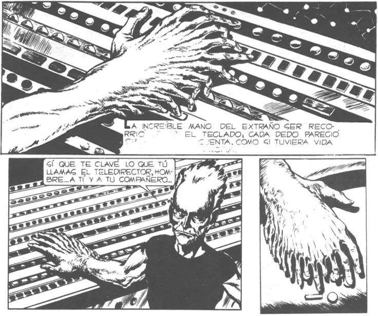

SOS (Just Another Dream)
Not all songs are universally acceptable—at least not to myself. This is one of those tracks. Recorded back in 2016 during a period of relative inexperience, I felt it barely met the threshold to justify its inclusion in the album.
However, I write this to focus on the underlying meaning and reasons behind its creation, despite its unrefined execution and unsatisfactory outcome.
Lyrics
You want to believe it was just a dream.
Walking through cold winter streets.
As if earthly tribulations swept everything away,
even in the final deluge, nothing alters my steady stride.
You can run from fear.
You can run from promises.
But you cannot escape…
From the will of God.
From His will.
In that dark heart, everyone is already dead.
Look at them trapped in flesh, squirming in agony.
I offered love, yet you crucified me.
I truly believed you were trying to change.
You can purchase many bodies.
You can buy luxury goods with gold.
But you can never buy…
The will of God alone.
His will alone.
Journal Entry — July 24, 2013
The next composition ought to be in a progressive metal style. For someone aiming to bring diverse dimensions and genres to an album, it feels ideal. The primary obstacle lies in balancing both guitar and keyboard lines, making them "interact" without hearing them simultaneously in real-time. Consequently, I will likely approach the arrangement track by track.
The core concept itself is not entirely new. The melody stemmed from a dream—effectively my first musical dream. Around that time, overwhelmed by accumulating struggles unrelated to drugs, I experienced a form of waking hallucination. I was also conversing frequently with Angélica, a Colombian friend and former coworker living locally for over a year, who drew strength from her Evangelical faith. We held lengthy debates on life's paths and perspectives. Searching for answers, I was influenced by the spiritual encounters she described, leading to dreams where I confronted spiritual entities.
I experienced the dream one night while living with my partner at the time. I recall fragments: it began inside a cathedral-like structure housing intriguing artwork and a dining table surrounded by nuns who appeared as prostitutes. A figure resembling a cleric was present, and we exchanged words. When I noted the setting was interesting, he offered a cynical retort, to which I replied in kind.
Suddenly, the scene dissolved, jumping to the dream's final sequence. A solemn, high-register piano melody began to play. The notes descended slowly, creating an atmosphere defined not by depression, but by sheer powerlessness.
The setting mirrored the area beneath the Constitución bridge: half-flooded streets, damp cardboard, homeless individuals sleeping beneath, stifling humidity, a violent storm, and massive swells. It resembled the end of the world. People were swept into the sky, dying, drowning, and sinking into their own ruin.
As for myself, I walked calmly through the torrential rain. The wind did not push me back, nor did the rain soak me. In the dream, I moved forward with steady, unhesitating steps, without looking around. I accepted that I was powerless to intervene, recognizing it as the will of God.
Yet amidst that scene, a deep inner impulse—a thought outside the dream state—surged: "I want to save them." I felt profound pity. In reality, I strive to help others. But they were trapped in their own destruction, beyond my reach. As mentioned, I was powerless, and my dream-self accepted that fact without shock or agitation.
Journal Entry — August 8, 2013
The piano intro and chorus are finished. Progress is slow. I hold several ideas and continue dreaming melodies, but either failed to record them or lacked my phone nearby.
Journal Entry — August 12, 2013
The lyrics are finally complete. All that remains to finalize the arrangement is a bridge connecting the chorus to the rest of the track.
Journal Analysis (2013)
You want to believe it was just a dream... / From the will of God.
This directly portrays the dream described earlier. It conveys the unyielding reality of divine will, which serves as the core of the song.
Two approaches existed to express this: through a bright, conventional religious melody, or through a sinister tone. Metal inherently carries an unsettling resonance. Yet the core message remains identical to a brighter composition—functioning primarily as a warning.
The title "Simplemente Otro Sueño" (Just Another Dream) is intentional irony. It frames the experience as a fleeting dream to be forgotten over time, rather than an existential revelation, regardless of faith. Furthermore, the acronym S.O.S. acts as a metaphor for the universal distress signal, implying humanity's underlying need for salvation through faith. While some may view it as cynicism, it stands as a clear allegory.
Background backing vocals incorporate biblical references, echoing Christ's declaration: "...My kingdom is not of this world..." (written in ancient Greek in the production notes).
In that dark heart, everyone is already dead... / His will alone.
This captures another dimension of the dream: souls near death due to internal devastation. While referencing Christ's passion, it reflects upon my past catalog of songs that attempted to inspire human transformation.
The harmony choir quotes Scripture: "Heaven and earth will pass away, but my words will not pass away." This subtly points to my own compositions, acknowledging that while physical existence is temporary, ideas endure in the hearts of those who value them.
It illustrates where society has drifted despite vast sacrifices, while emphasizing that all is not lost. Since tomorrow is never guaranteed, personal endings arrive unexpectedly; thus, the only definitive moment to change is the present.
Furthermore, it hints at these visions as "revelations," though structurally they were dreams. Love remains the core philosophy I have advocated since I began writing, much like the foundational teachings of Christ.
The Choruses & Hidden Allusions:
This stands as the most deliberate section. It functions as an ironic, semi-hidden message directed at any future listener seeking hidden meanings within the music. Three distinct chorus layers were inserted.
The first chorus explicitly underscores that the Kingdom is not of this earthly realm. Beyond traditional interpretations, the third chorus introduces an allusion to Héctor Germán Oesterheld, the legendary creator silenced by state oppression.
The quoted phrase references the "Gurbos" or the "Hands" (Manos)—alien invaders in El Eternauta who ultimately awaken to universal harmony. Their lullaby, sung both in youth and at the moment of death, is referenced here as a parallel to the crucifixion scene.

The concept of being unable to escape destiny or divine will is visibly anchored in the myth of Oedipus, personified through the figure of the blind prophet Tiresias.
Additional Note (Behind the Scenes): I remember using pedal distortion directly on the microphone to achieve a unique effect on the vocals. It was an experiment heavily inspired by David Bowie's remarkably marginal track, "Something in the Air."